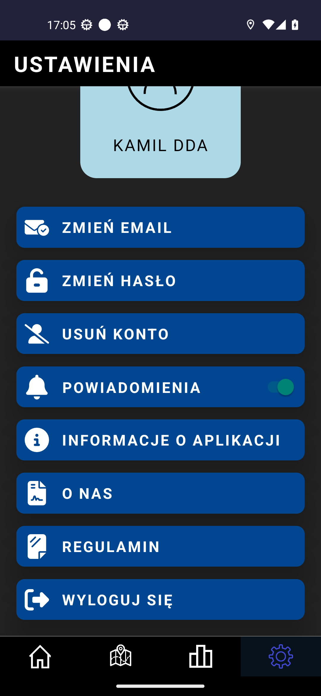
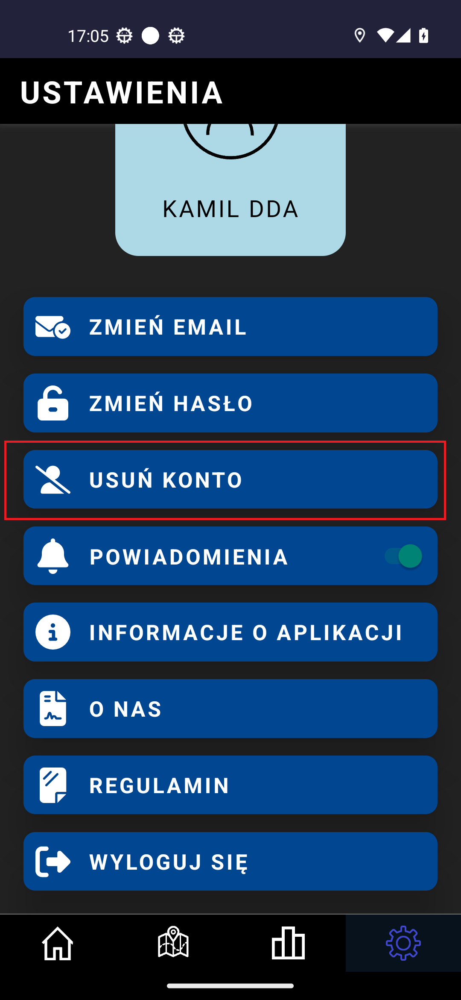

Witaj w Traffic Threats
W celu usunięcia aplikacji musisz być zalogowany, później postępuj zgodnie z instrukcją poniżej
1. Otwórz ustawienia wybierając ikonkę settings
2. Kliknij w przycisk wskazany w czerwonym prostokącie
3. Wprowadź swoje hasło oraz je potwierdź

3. Jeśli hasła się zgadzają zostanie wyświetlony przycisk wskazany strzałką. Po kliknięciu go zostanie zweryfikowane hasło. Jeśli jest poprawne konto zostało usunięte.

FAQ
Co to jest Traffic Threats?
Traffic Threats to aplikacja, która umożliwia użytkownikom dodawanie
zagrożeń na mapie. Użytkownicy mogą przeglądać zagrożenia, aby
dowiedzieć się, co się dzieje w ich okolicy oraz sprawdzać swoje
statystyki dotyczące dodanych i potwierdzonych zagrożeń.
Jak mogę zainstalować Traffic Threats?
Aplikację Traffic Threats można pobrać i zainstalować z oficjalnego
sklepu z aplikacjami na swoim urządzeniu mobilnym (App Store dla iOS
lub Google Play dla Androida).
Czy muszę się rejestrować, aby korzystać z aplikacji?
Rejestracja nie jest wymagana do przeglądania zagrożeń na mapie.
Jednakże, aby dodawać zagrożenia i przeglądać swoje statystyki,
konieczne jest założenie konta.
Jak mogę dodać zagrożenie?
Aby dodać zagrożenie, zaloguj się na swoje konto, a następnie
kliknij przycisk "Dodaj zagrożenie". Wprowadź wymagane informacje
dotyczące zagrożenia i zatwierdź zgłoszenie.
Jakie rodzaje zagrożeń mogę zgłaszać?
Możesz zgłaszać różnorodne zagrożenia drogowe, takie jak wypadki,
korki, kontrole drogowe itp.
Dlaczego aplikacja potrzebuje dostępu do mojej lokalizacji?
Aplikacja Traffic Threats wymaga dostępu do lokalizacji w trybie
ciągłym, aby informować Cię w czasie rzeczywistym o nowych
zagrożeniach w Twojej okolicy. To pozwala na otrzymywanie aktualnych
powiadomień o zagrożeniach, nawet gdy aplikacja jest zamknięta.
Czy moje dane osobowe są bezpieczne?
Tak, Twoje dane osobowe są przetwarzane zgodnie z naszą Polityką
Prywatności. Dbamy o bezpieczeństwo Twoich danych i stosujemy
odpowiednie środki ochrony.
Jak mogę skontaktować się z zespołem wsparcia?
Jeśli potrzebujesz pomocy lub masz pytania, możesz skontaktować się
z naszym zespołem wsparcia, wysyłając e-mail na adres
trafficthreats@gmail.com.
Jakie uprawnienia muszę przyznać aplikacji?
Aplikacja wymaga uprawnień do lokalizacji w trybie ciągłym oraz
uprawnień do powiadomień. Są one niezbędne do zapewnienia pełnej
funkcjonalności aplikacji.
Czy mogę zgłaszać fałszywe zagrożenia?
Zgłaszanie fałszywych zagrożeń jest surowo zabronione. Prosimy o
zgłaszanie tylko rzeczywistych zagrożeń, aby zapewnić dokładność i
wiarygodność informacji dla wszystkich użytkowników.
Jak mogę usunąć swoje konto?
Aby usunąć swoje konto, musisz wejść w zakładkę "ustawienia", tam
wybrać "zarządzaj kontem" i wybrać opcję usuń konto, następnie
postępuj z krokami zawartymi w aplikacji. Jeśli logowałeś się z
użyciem konta Google, wystarczy wejść w zakładkę "ustawienia" i
wybrać opcję "usuń konto"